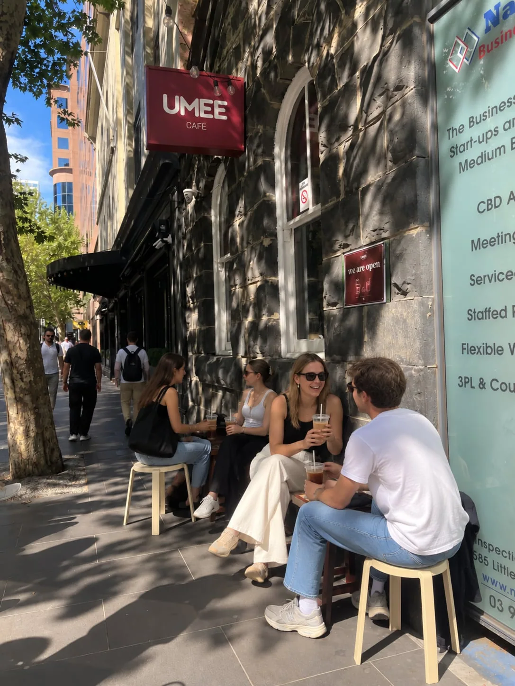

real client, real constraints ♡01 / Client-based innovation · Melbourne
Umee Café: designing around customer needs
Working with a local café, I contributed to client communication, research design, H2 findings analysis and H1 recommendations. I helped rethink a digital menu concept by proposing side-by-side comparisons of coffee intensity, sweetness, creaminess and flavour — so “interactive” would mean more than simply being digital.
Client communicationResearch designConcept development
Explore the Umee menu concept ↗Prototype / recommendation only — not a validated commercial rollout.